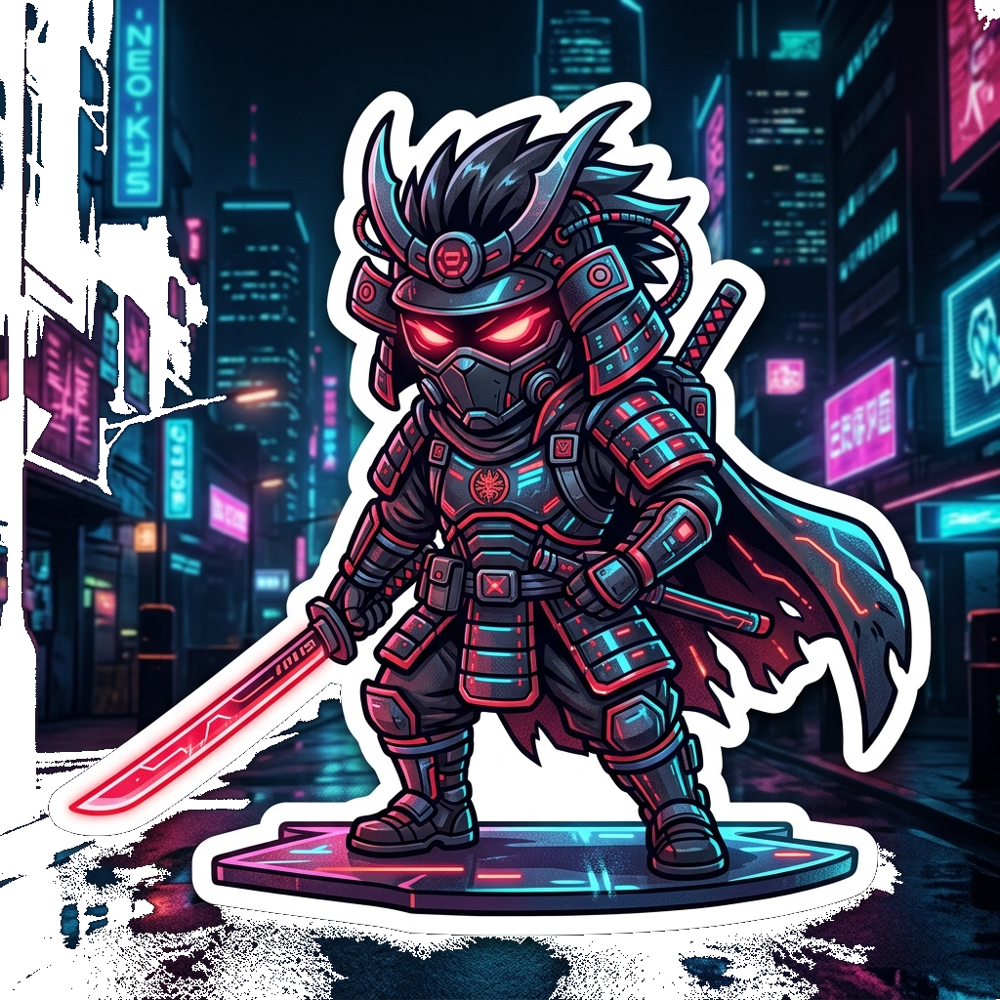
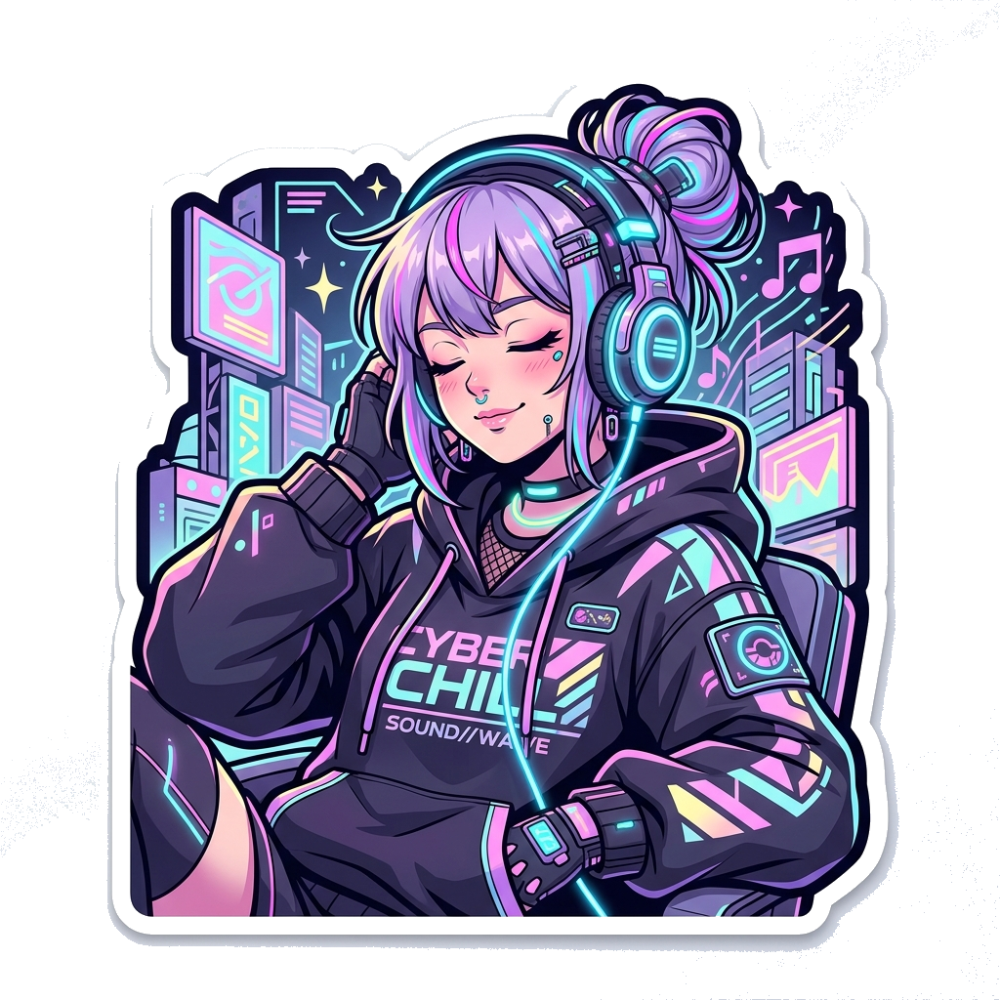

【武士 // SAMURAI】

【チル // LO-FI CHILL】
MIDNIGHT TRANSMISSION // 真夜中の電脳空間
なんでもないや (Nandemonaiya)
Mone Kamishiraishi (Mitsuha) · 上白石萌音
High-Fidelity Cyber Lo-Fi · RADWIMPS (Your Name)
● Click Play to Listen
🔈
🔊 75%
Keyboard shortcuts: [Space] Play/Pause · [← / →] Skip 10s